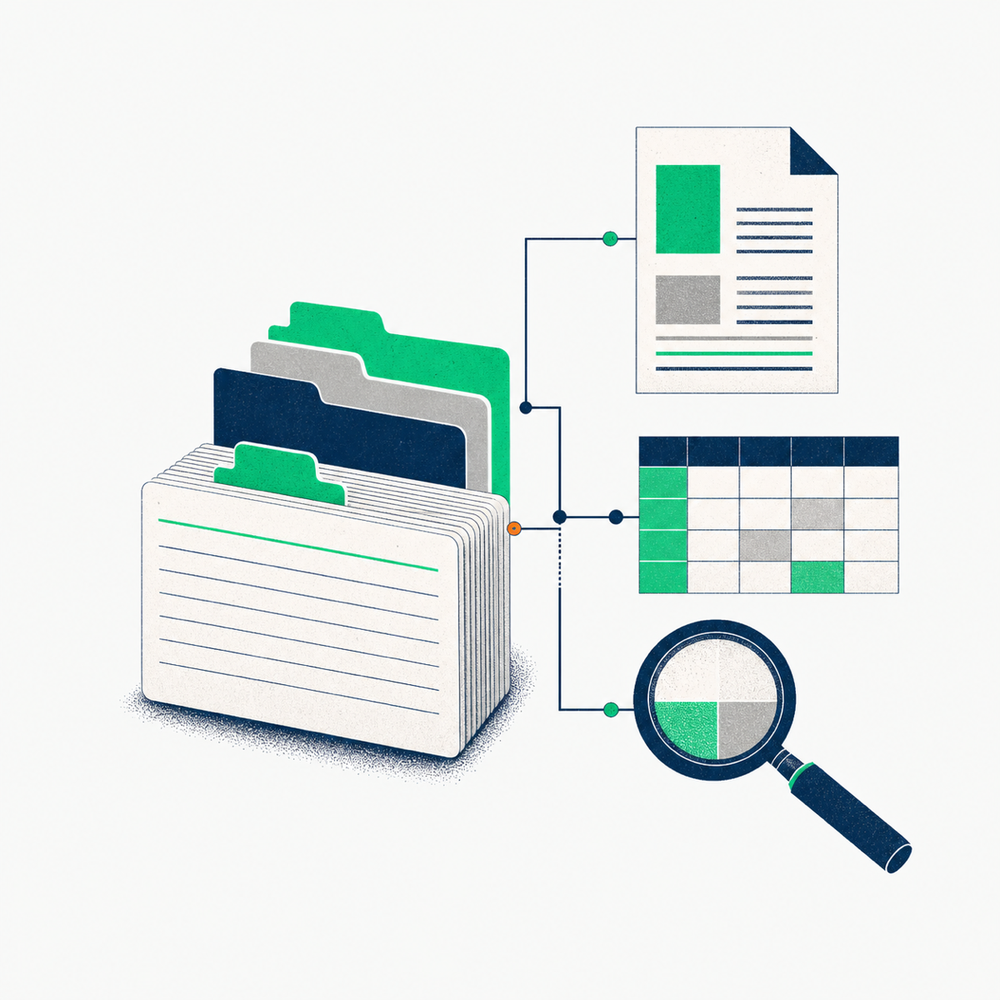

Search
融合全文与语义结果，快速定位有用内容。
Knowledge infrastructure for agents
ReIndex 将散落在文件夹中的文档、表格和图片，编译为结构清晰、可追溯、可搜索的知识包。

FROM RAW FILES
TO READY KNOWLEDGE
FOR PEOPLE & AGENTS
A clear path
不丢失来源，不掩盖原始结构。ReIndex 用统一的 Node 格式，把资料变成可可靠使用的知识基础设施。
读取文件和目录，保留原有层级及来源信息。
生成携带说明、结构化信息与资源链接的 Node。
导入搜索与存储层，为人和 Agent 提供统一入口。
Built for retrieval
融合全文与语义结果，快速定位有用内容。
沿 Node 树浏览，保持资料本来的语境。
读取 Node 或递归获取相关原始资源。
通过 DuckDB 精确查询完整表格数据。
Open by design
稳定身份、内容说明、来源定位和资源校验共同构成 ReIndex 的最小知识单元。它足够清晰，既能被程序处理，也能被 Agent 直接阅读。
阅读格式说明---
spec: "reindex/node@0.1"
id: "019f9c2a-..."
kind: "table"
title: "年度能源数据"
source:
uri: "raw://energy.csv"
---
## Preview
年份 | 区域 | 发电量
2024 | Berlin | 4.82 TWhReIndex v0.1